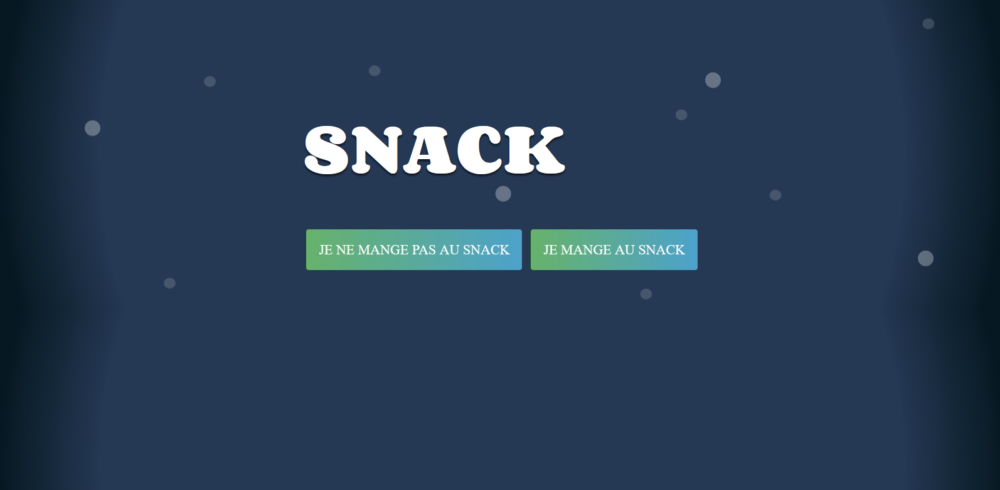

Ce mini-projet a été réalisé de ma propre initiative, il reprends un exercice de mathématiques que nous avons réalisés avec mon professeur de mathématiques: M. Bariller. Il demandais de chiffrer un texte, et de le déchiffrer grace à une version de l'algorithme de chiffrement AES
C'est un algorithme en python, le cahier des charges que je me suis assigné est relativement simple, il consiste en un programme réalisé en python, le programme demande à l'uttilisateur les clefs de chiffrement, puis le texte à chiffrer. Avec tout cela, le programme va fonder un fichier txt dans lequel sera inscrit la verssion chiffrée du texte entré par l'utilisateur.

Ce projet m'as permis d'affiner mes compétences en python. Je l'ais fais avec un bon coeur, car le sujet me passionnait. J'ais aussi mis à profit mon imagination débordante en programmation.